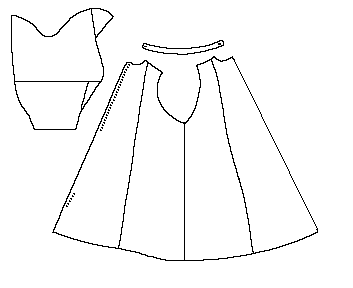

Pattern drawing based on N�rlundThis is a man's garment made of four front pieces and four back pieces The garment is open in front, closing with buttons. There is one button in the collar, and 15 surviving buttonholes down the front, spaces about 1.8 cm (.6") apart. There are three button holes at the bottom 14-18 cm (5.5-7") from the bottom, but these seem to end, suggesting that there is a gap in the closure. Norlund suggests that there are no buttonholes from the waist down, the waist being closed by a belt. The front opening and neck are trimmed in a thin light colored material. The seam along the back is decorated with a backstitch.
The sleeve length is 62 cm (24.4"), and compared to the relatively short garment length indicates that this coat probably reached about to the knees of the wearer.
Sleeve length: 62 cm (24.4")
Front Seam: 95 cm (37.4")
Back seam: 103 cm (40.5")
Neck Circumference: 44 cm (17")
Armhole Circumference: 65 cm (25.6")
Waist Circumference: 140 cm (55")
Bottom Circumference: 300 cm (118")
The fabric is a medium stout fourshaft twill with a black warp and a brown weft.
Herjolfsnes no. 64 is a much more ravaged garment that appears to be made on the same general design. There are twelve existing button holes in the top about 2.25 cm (.9") apart, as well as 2 button holes 24 cm (9.4") from the bottom.
Front Seam: 107 cm (42")
Back seam: 125 cm (49")
Neck Circumference: 48 cm (18.9")
Waist Circumference: 136 cm (53.5")
Bottom Circumference: 300 cm (118")
Go to Tunic Page; Herjolsnes Site Page
Some Clothing of the Middle Ages -- Tunics -- Herjolfsnes 63, by I. Marc Carlson, Copyright 1997 This code is given for the free exchange of information, provided the Author's Name is included in all future revisions, and no money change hands-